[Decision Variable Prediction] Figure 5#
The amount of information available to the mouse correlates inversely with infotaxis behavior.#
For reference, here is the full figure

and corresponding supplemental figure

cd "/app/"
/app
/app/.venv/lib/python3.9/site-packages/IPython/core/magics/osm.py:417: UserWarning: using dhist requires you to install the `pickleshare` library.
self.shell.db['dhist'] = compress_dhist(dhist)[-100:]
%run env.py
%run run.py connect
import pandas as pd
import matplotlib.pyplot as plt
import seaborn as sns
import numpy as np
from vr4mice.analysis import plotting
from vr4mice.schema import base_analysis
from vr4mice.analysis.analysis import style
from vr4mice.schema.interpolated_trajectories import InterpolatedTrials
from vr4mice.schema.decision import PredictionModel, DecisionPoints, InclusionStatus, ExperimentMember, LabelSet, Label
from statsmodels.stats.anova import AnovaRM
import scipy.stats as stats
import matplotlib.colors as mcolors
import matplotlib.cm as cm
from vr4mice.analysis import regression
from scipy.stats import pearsonr
from mpl_toolkits.axes_grid1 import make_axes_locatable
from vr4mice.analysis.stats import get_multi_p_values_global, get_multi_p_values_binned, plot_aperture_heatmap
style()
save_fig_path = "notebooks/Paper_figures/Figure_output/"
task_type_key = {"set_name": "contrast_white_target",
"stage_name": "multi_occlusion",}
sessions_list = list(
(InclusionStatus * ExperimentMember & {"included": 1} & task_type_key).fetch(
"dataset"
)
)
len(sessions_list)
25
# This takes a while to fetch because we need to fetch data for all trials
dataset_list = []
for d in sessions_list:
print(d)
try:
dataset_list.append(pd.DataFrame((InterpolatedTrials() & f'dataset = "{d}"').fetch(as_dict=True)[0]))
except Exception as err:
print(err, " dataset missing")
interpolated_df = pd.concat(dataset_list)
interpolated_df["mouse_name"] = interpolated_df.dataset.str.split("_").str[0]
31726_2025-03-27_1
31726_2025-03-28_1
31728_2025-03-11_1
31728_2025-03-14_1
J729_2024-12-11_1
J729_2024-12-12_1
J729_2024-12-13_1
J729_2024-12-15_1
Jacana_2024-08-21_1
Jacana_2024-08-22_1
Kiwi_2024-08-19_1
Kiwi_2024-08-20_1
Kiwi_2024-08-21_1
Lemming_2024-08-14_1
Lemming_2024-08-15_1
Lemming_2024-08-19_1
Nightingale_2024-08-15_1
Nightingale_2024-08-16_1
Nightingale_2024-08-21_1
Nightingale_2024-08-22_1
Oribi_2024-08-26_1
Oribi_2024-08-27_1
Oribi_2024-08-29_1
Pheasant_2024-08-26_1
Pheasant_2024-08-28_1
box_df = base_analysis.BoxDataFrame().get_data(key={"dataset": "Pheasant_2024-08-15_2"})
fig, ax = plt.subplots(1, 1, figsize=(5, 5))
ax = ax
mean_mouse = interpolated_df.groupby(
["dataset", "aperture", "trial_length"], as_index=False
).mean(numeric_only=True)
mean_mouse.sort_values("aperture", inplace=True)
mean_mouse["aperture"] = mean_mouse.aperture.astype("str")
sns.lineplot(
data=mean_mouse,
x="trial_length",
y="velocity",
palette=plotting.colors_multi_aperture,
hue="aperture",
errorbar="se",
ax=ax,
)
sns.despine(offset=10)
ax.set_xlabel("Trial progression")
ax.set_ylabel("Combined velocity (cm/s)")
plt.savefig(save_fig_path + "figure5_velocity.svg", transparent=False)
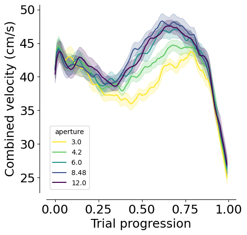
mean_mouse = interpolated_df.groupby(
["dataset", "aperture", "trial_length"], as_index=False
).mean(numeric_only=True)
fig, ax = plt.subplots(2, 2, figsize=(12, 8))
ax = ax.flatten()
for (i, label), label_str in zip(enumerate(
["velocity_x_fliped", "velocity_y", "local_tortuosity", "distance_to_choice"]
), ["x velocity (cm/s)", "y velocity (cm/s)", "Local Tortuosity", "Distance to Port (cm)"]):
sns.lineplot(
data=mean_mouse,
x="trial_length",
y=label,
palette=(
plotting.colors_aperture[:2]
if len(mean_mouse.aperture.unique()) == 2
else plotting.colors_multi_aperture
),
hue="aperture",
errorbar="se",
ax=ax[i],
)
ax[i].set_ylabel(label_str)
ax[i].set_xlabel("Trial progression")
sns.despine(ax=ax[i], offset=10)
plt.tight_layout(pad=2)
plt.savefig(save_fig_path + "figure5_velocity_tortuosity_distance.svg", bbox_inches="tight", transparent=True)
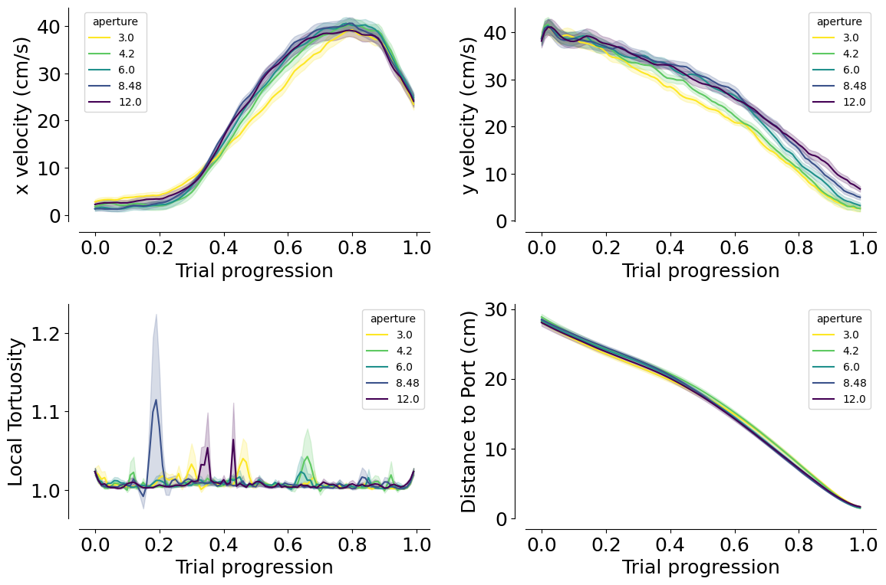
mean_mouse = interpolated_df.groupby(
["dataset", "aperture", "trial_left_choice", "trial_length"], as_index=False
).mean(numeric_only=True)
fig, ax = plt.subplots(1, 2, figsize=(12, 4))
ax = ax.flatten()
dash_styles = {
mean_mouse.trial_left_choice.unique()[0]: "", # Solid
mean_mouse.trial_left_choice.unique()[1]: (5, 5) # Dashed
}
for (i, label), label_str in zip(enumerate(["heading_dir", "head_angle"]),
["Running direction", "Head-body angle"]):
sns.lineplot(
data=mean_mouse,
x="trial_length",
y=label,
palette=plotting.colors_choice[::-1]
if len(mean_mouse.aperture.unique()) == 2
else plotting.colors_multi_aperture,
hue="trial_left_choice"
if len(mean_mouse.aperture.unique()) == 2
else "aperture",
style=(
"aperture"
if len(mean_mouse.aperture.unique()) == 2
else "trial_left_choice"
),
dashes=dash_styles,
errorbar="se",
ax=ax[i],
)
ax[i].set_ylabel(label_str)
ax[i].set_xlabel("Trial progression")
sns.despine(ax=ax[i], offset=10)
plt.tight_layout(pad=2)
plt.savefig(save_fig_path + "figure5_heading_dir_head_angle.svg", bbox_inches="tight", transparent=True)
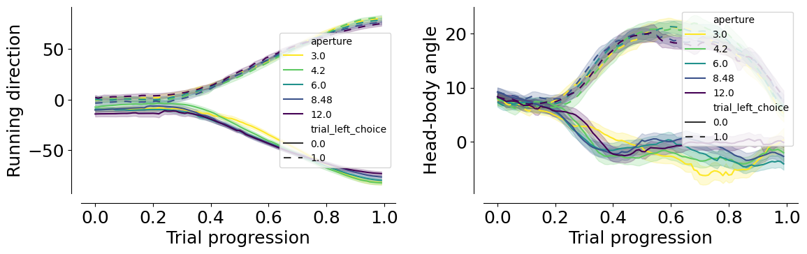
mean_mouse = interpolated_df.groupby(
["dataset", "aperture", "trial_left_choice", "trial_length"], as_index=False
).mean(numeric_only=True)
fig, ax = plt.subplots(2, 2, figsize=(12, 8))
ax = ax.flatten()
dash_styles = {
mean_mouse.trial_left_choice.unique()[0]: "", # Solid
mean_mouse.trial_left_choice.unique()[1]: (5, 5) # Dashed
}
for (i, label), label_str in zip(enumerate(
["heading_dir_cos", "heading_dir_sin", "head_angle_cos", "head_angle_sin"]
), ["cos(Running Direction)", "sin(Running Direction)", "cos(Head-Body Angle)", "sin(Head-Body Angle)"]):
sns.lineplot(
data=mean_mouse,
x="trial_length",
y=label,
palette=plotting.colors_choice[::-1]
if len(mean_mouse.aperture.unique()) == 2
else plotting.colors_multi_aperture,
hue="trial_left_choice"
if len(mean_mouse.aperture.unique()) == 2
else "aperture",
style=(
"aperture"
if len(mean_mouse.aperture.unique()) == 2
else "trial_left_choice"
),
errorbar="se",
ax=ax[i],
dashes=dash_styles,
)
ax[i].set_ylabel(label_str)
ax[i].set_xlabel("Trial progression")
sns.despine(ax=ax[i], offset=10)
plt.tight_layout(pad=2)
plt.savefig(save_fig_path + "figure5_heading_dir_head_angle_cos_sin.svg", bbox_inches="tight", transparent=True)
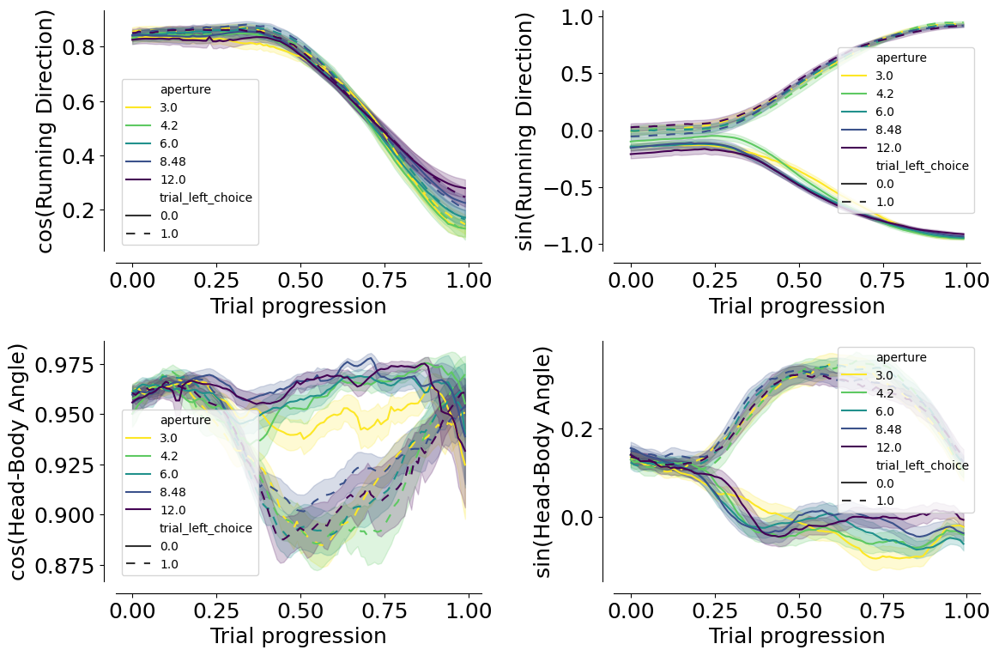
interpolated_df["mouse_name"] = interpolated_df.dataset.str.split("_").str [0]
optimal_df = interpolated_df.groupby(["dataset", "mouse_name", "trial", "aperture"], as_index=False).mean()
optimal_df = interpolated_df.groupby(["dataset", "mouse_name", "aperture"], as_index=False).mean()
optimal_df["lab_id"] = 0
for dataset_name in sessions_list:
# Fetch lab_id for each dataset
optimal_df.loc[optimal_df.dataset==dataset_name, "lab_id"] = ((vr4mice.Collab() & f'dataset = "{dataset_name}"') * vr4mice.Labs()).fetch("lab")[0]
fig, ax = plt.subplots(1, 2, figsize=(10, 5))
counts = (
optimal_df
.groupby(["mouse_name", "dataset", "aperture"], as_index=False)
.optimal_p.mean()
)
counts["count"] = counts["optimal_p"]
counts = pd.DataFrame(counts.reset_index())
counts.aperture = counts.aperture.round(2).astype(str)
plotting._plot_bar_counts(
counts=counts,
label_x="aperture",
alpha=0.2,
ax=ax[0],
per_mouse=True,
cmap=plotting.colors_multi_aperture,
)
ax[0].invert_xaxis()
ax[0].set_xlabel("Occlusion (%)")
ax[0].set_ylabel("Fitted p")
ax[0].set_xlim(-0.5, 4.5)
ax[0].set_xticks([0, 1, 2, 3, 4], ["100", "90", "65", "28", "1"])
plt.legend([], [], frameon=False)
sns.despine(offset=10, ax=ax[0])
p_values = get_multi_p_values_global(optimal_df, y_var="optimal_p")
plot_aperture_heatmap(p_values, ax= ax[1])
sns.despine(offset=10, ax=ax[1])
print(AnovaRM(counts, depvar="count", subject="dataset", within=["aperture"]).fit())
plt.savefig(save_fig_path + "figure5_fitted_p.svg", transparent=True)
Anova
======================================
F Value Num DF Den DF Pr > F
--------------------------------------
aperture 3.1376 4.0000 96.0000 0.0180
======================================
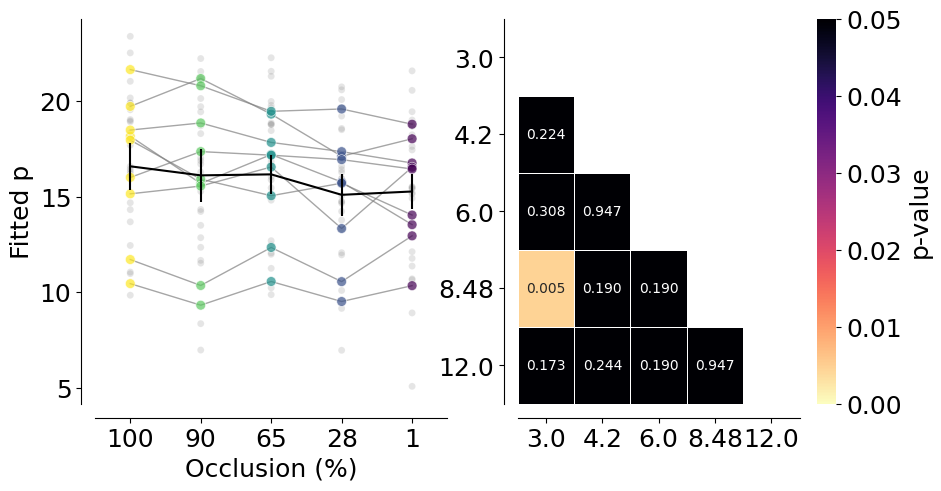
fig, ax = plt.subplots(1, 2, figsize=(10, 5))
counts = (
optimal_df
.groupby(["lab_id", "dataset", "aperture"], as_index=False)
.optimal_p.mean()
)
counts["count"] = counts["optimal_p"]
counts = pd.DataFrame(counts.reset_index())
counts.aperture = counts.aperture.round(2).astype(str)
plotting._plot_bar_counts(
counts=counts,
label_x="aperture",
alpha=0.2,
ax=ax[0],
per_lab=True,
cmap=plotting.colors_multi_aperture,
)
ax[0].invert_xaxis()
ax[0].set_xlabel("Occlusion (%)")
ax[0].set_ylabel("Fitted p")
ax[0].set_xlim(-0.5, 4.5)
ax[0].set_xticks([0, 1, 2, 3, 4], ["100", "90", "65", "28", "1"])
plt.legend([], [], frameon=False)
sns.despine(offset=10, ax=ax[0])
p_values = get_multi_p_values_global(optimal_df, y_var="optimal_p")
plot_aperture_heatmap(p_values, ax= ax[1])
sns.despine(offset=10, ax=ax[1])
print(AnovaRM(counts, depvar="count", subject="dataset", within=["aperture"]).fit())
plt.savefig(
save_fig_path + "figure5_fitted_p_per_lab.svg",
transparent=True,
)
Anova
======================================
F Value Num DF Den DF Pr > F
--------------------------------------
aperture 3.1376 4.0000 96.0000 0.0180
======================================
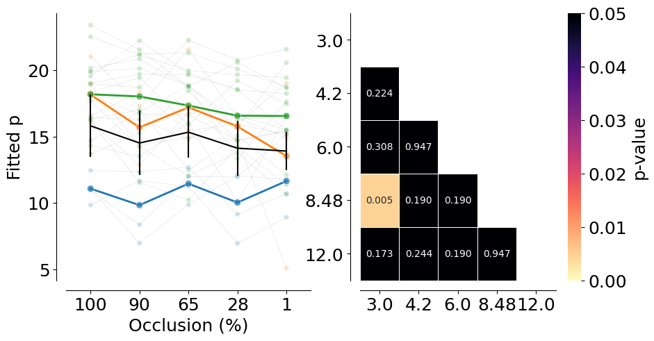
Prediction model#
model_key = {"label_set_id": 8, "params_id": 1}
# Coefficients for dual occluder task
coef = (PredictionModel() & task_type_key & model_key).fetch1("coefficients")
# Logits of the regression
model_labels, clean_labels = (LabelSet.Member * Label & model_key).fetch("label_key", "clean_name")
fig, ax = plt.subplots(1, 1, figsize=(2, 5))
ax.barh(
model_labels,
np.mean(coef[:, 1:], axis=0),
yerr=stats.sem(coef[:, 1:], axis=0),
color="#7C7C7C",
)
sns.despine(offset=10, ax=ax)
ax.set_yticks(np.arange(len(model_labels)))
ax.set_yticklabels(clean_labels, rotation=0, ha="right", fontsize=15)
ax.set_xlabel("Logits")
ax.set_ylabel("Features")
plt.savefig(
save_fig_path + "figure5_model_logits.svg", transparent=False
)

prediction_df = pd.DataFrame((PredictionModel().SessionPrediction() & model_key & task_type_key).fetch(
"dataset", "trial", "proba_left", "accuracy", "trial_length", as_dict=True)).explode(["trial", "proba_left", "accuracy", "trial_length"])
df_model = prediction_df.merge(
interpolated_df[["dataset", "trial_length", "trial", "aperture", "trial_left_choice", "x", "y"]], on=["dataset", "trial", "trial_length"]
)
df_model["accuracy"] = df_model["accuracy"].astype(float)
df_model["proba_left"] = df_model["proba_left"].astype(float)
df_model_mean = df_model.groupby(["dataset", "aperture", "trial_left_choice", "trial_length"], as_index=False).mean()
fig, ax = plt.subplots(1, 1, figsize=(5, 5))
dash_styles = {
df_model_mean.aperture.unique()[0]: "", # Solid
df_model_mean.aperture.unique()[1]: (5, 5) # Dashed
}
sns.lineplot(
data=df_model_mean,
x="trial_length",
y="proba_left",
hue="aperture",
style="trial_left_choice",
palette=plotting.colors_multi_aperture,
sort=False,
alpha=1,
ax=ax,
)
ax.hlines(0.5, xmin=0, xmax=1, colors="black", linestyles="dashed")
ax.hlines(0.8, xmin=0, xmax=1, colors="gray", linestyles="dotted")
ax.hlines(0.2, xmin=0, xmax=1, colors="gray", linestyles="dotted")
ax.set_ylabel("Proba(Left)")
ax.set_xlabel("Trial progression")
sns.despine(offset=10)
plt.legend([], [], frameon=False)
plt.savefig(
save_fig_path + "figure5_dynamic_decision_variable_mean.svg", transparent=True
)
plt.savefig(
save_fig_path + "figure5_dynamic_decision_variable_mean.png", transparent=True, dpi=300
)
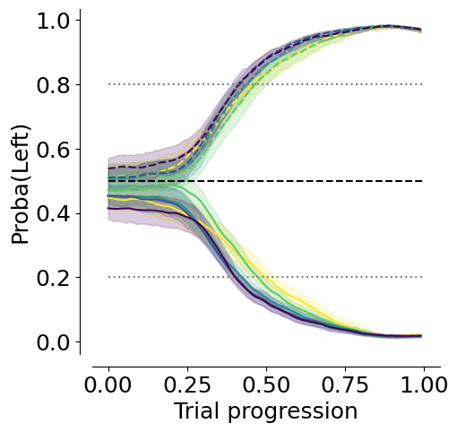
# Accuracy
df_model_mean = df_model.groupby(["dataset", "aperture", "trial_length"], as_index=False).mean()
fig, ax = plt.subplots(1, 1, figsize=(7, 5))
sns.lineplot(
ax=ax,
data=df_model_mean,
y="accuracy",
x="trial_length",
hue="aperture",
palette=plotting.colors_multi_aperture,
errorbar="se",
)
sns.despine(offset=10)
ax.set_xlabel("Trial progression")
ax.set_ylabel("Accuracy")
ax.hlines(0.5, 0, 1, color="black", linestyle="--")
plt.legend([], [], frameon=False)
plt.savefig(
save_fig_path + "figure5_model_accuracy.svg", transparent=False
)

df_model["trial_length_bin"] = pd.cut(
df_model["trial_length"], bins=50
)
df_anova = df_model.groupby(
["dataset", "aperture", "trial_length_bin"], as_index=False
).mean(numeric_only=True)
print(
AnovaRM(
data=df_anova,
depvar="accuracy",
subject="dataset",
within=["aperture", "trial_length_bin"],
).fit()
)
Anova
============================================================
F Value Num DF Den DF Pr > F
------------------------------------------------------------
aperture 11.4916 4.0000 96.0000 0.0000
trial_length_bin 474.8240 49.0000 1176.0000 0.0000
aperture:trial_length_bin 4.3735 196.0000 4704.0000 0.0000
============================================================
Get the decision points#
decision_points = pd.DataFrame((DecisionPoints() & task_type_key & model_key & "threshold_uncertainty = 0.2").fetch(as_dict=True))
decision_points = decision_points.explode(["trial", "aperture", "trial_length", "trial_left_choice", "proba_left", "x", "y", "trial_rewarded"])
decision_points["mouse_name"] = decision_points.dataset.str.split("_").str[0]
decision_points["y"] = decision_points["y"].astype(float)
Get distance to screen at decision point#
fig, ax = plt.subplots(1, 1, figsize=(4, 5))
_ = plotting.pairplot_average_decision_point(
decision_points,
label_parameter="y",
ax=ax,
cmap=plotting.colors_multi_aperture,
per_mouse=True,
)
ax.set_xlabel("Objects visibility (%)")
ax.set_ylim(9, 21)
ax.set_xlim(-0.5, 4.5)
ax.set_xticks([0, 1, 2, 3, 4], ["100", "90", "65", "28", "1"])
plt.legend([], [], frameon=False)
sns.despine(offset=10)
plt.savefig(
save_fig_path + "figure5_decision_points_distance.svg",
transparent=True,
)
3.0-4.2: TtestResult(statistic=0.49739267320565256, pvalue=0.6234385950886467, df=24)
mean difference: -0.4588393517271001
3.0-6.0: TtestResult(statistic=1.693880063404927, pvalue=0.10322884643216759, df=24)
mean difference: -1.4844673241082784
3.0-8.48: TtestResult(statistic=3.1792023984838473, pvalue=0.004038831906936139, df=24)
mean difference: -2.471162040680559
mean: 13.497117945523021 +/- 0.5902315830199871
4.2-6.0: TtestResult(statistic=1.4004289297852808, pvalue=0.1741812780717876, df=24)
mean difference: -1.0256279723811783
4.2-8.48: TtestResult(statistic=2.7248202118290044, pvalue=0.011813735411151478, df=24)
mean difference: -2.012322688953459
mean: 13.038278593795921 +/- 0.5588690162720868
6.0-8.48: TtestResult(statistic=1.5436863271887404, pvalue=0.135748808870696, df=24)
mean difference: -0.9866947165722806
mean: 12.012650621414743 +/- 0.49183009302876524
mean: 11.025955904842462 +/- 0.4311999013527618
12.0-3.0: TtestResult(statistic=-3.942764100540485, pvalue=0.0006088275673617407, df=24)
mean difference: 3.0493133709812312
12.0-4.2: TtestResult(statistic=-3.115811254734461, pvalue=0.004705440469699779, df=24)
mean difference: 2.590474019254131
12.0-6.0: TtestResult(statistic=-2.7638777570771382, pvalue=0.010796122359146947, df=24)
mean difference: 1.5648460468729528
12.0-8.48: TtestResult(statistic=-0.9277638576401966, pvalue=0.36276719907384913, df=24)
mean difference: 0.5781513303006722
mean: 10.44780457454179 +/- 0.4628144770914225

decision_points["lab_id"] = 0
for dataset_name in sessions_list:
# Fetch lab_id for each dataset
decision_points.loc[decision_points.dataset==dataset_name, "lab_id"] = ((vr4mice.Collab() & f'dataset = "{dataset_name}"') * vr4mice.Labs()).fetch("lab")[0]
fig, ax = plt.subplots(1, 2, figsize=(10, 5))
_ = plotting.pairplot_average_decision_point(
decision_points,
label_parameter="y",
ax=ax[0],
cmap=plotting.colors_multi_aperture,
per_lab=True,
)
ax[0].set_ylim(7, 25)
ax[0].set_xlim(-0.5, 4.5)
ax[0].set_xticks([0, 1, 2, 3, 4], ["100", "90", "65", "28", "1"])
plt.legend([], [], frameon=False)
sns.despine(offset=10, ax=ax[0])
p_values = get_multi_p_values_global(decision_points, y_var="y")
plot_aperture_heatmap(p_values, ax= ax[1])
sns.despine(offset=10, ax=ax[1])
decision_points_anova = decision_points.groupby(["dataset", "aperture"], as_index=False)[
"y"
].mean()
print(AnovaRM(decision_points_anova, depvar="y", subject="dataset", within=["aperture"]).fit())
plt.savefig(
save_fig_path + "figure5_decision_points_distance_per_lab.svg",
transparent=True,
)
3.0-4.2: TtestResult(statistic=1.642537561074118, pvalue=0.11351827397368137, df=24)
mean difference: -0.45883935172709833
3.0-6.0: TtestResult(statistic=4.2983466586465715, pvalue=0.00024733745617359606, df=24)
mean difference: -1.4844673241082784
3.0-8.48: TtestResult(statistic=6.155926130065273, pvalue=2.3250750840673953e-06, df=24)
mean difference: -2.4711620406805572
mean: 13.49711794552302 +/- 0.5902315830199871
4.2-6.0: TtestResult(statistic=3.10821148732398, pvalue=0.004792130413702259, df=24)
mean difference: -1.02562797238118
4.2-8.48: TtestResult(statistic=4.974868865020553, pvalue=4.430266888757864e-05, df=24)
mean difference: -2.012322688953459
mean: 13.038278593795921 +/- 0.5588690162720868
6.0-8.48: TtestResult(statistic=5.2375325199351295, pvalue=2.2800072677224504e-05, df=24)
mean difference: -0.9866947165722788
mean: 12.01265062141474 +/- 0.49183009302876524
mean: 11.025955904842462 +/- 0.4311999013527618
12.0-3.0: TtestResult(statistic=-9.208450288570099, pvalue=2.3989253825818278e-09, df=24)
mean difference: 3.0493133709812295
12.0-4.2: TtestResult(statistic=-7.990309264145748, pvalue=3.224419106199675e-08, df=24)
mean difference: 2.590474019254131
12.0-6.0: TtestResult(statistic=-7.092342074911281, pvalue=2.482781039309869e-07, df=24)
mean difference: 1.564846046872951
12.0-8.48: TtestResult(statistic=-2.3013268840582772, pvalue=0.03036282265382349, df=24)
mean difference: 0.5781513303006722
mean: 10.44780457454179 +/- 0.4628144770914225
Anova
======================================
F Value Num DF Den DF Pr > F
--------------------------------------
aperture 33.6229 4.0000 96.0000 0.0000
======================================
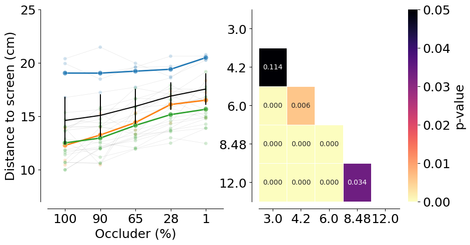
info_matrices = []
for ap in ["8.7", "12.3", "17.3", "24.5", "34.6"]:
with open(f"information_maps/data/info_matrix_unnormalized_{ap}w.npy", "rb") as file:
info_matrix = np.rot90(np.load(file), k=1)
info_matrices.append(info_matrix)
# normalize across both maps to max 1
max_value = max(im.max() for im in info_matrices)
info_matrices = [im / max_value for im in info_matrices]
info_map = dict(zip([0, 10, 35, 72, 99], info_matrices))
aperture_to_occlusion = {
12.0: 99,
8.48: 72,
6.0: 35,
4.2: 10,
3.0: 0
}
fig, ax = plt.subplots(
1, len(df_model.aperture.unique()), figsize=(20, 4), constrained_layout=True,
)
decision_color = "deeppink"
session_to_plot = "Nightingale_2024-08-16_1"
# Pick 15 trials for each condition randomly (fixed seed for reproducibility)
np.random.seed(12)
trials = []
for aperture in sorted(df_model.aperture.unique()):
ap_trials = df_model[
(df_model.dataset == session_to_plot) & (df_model.aperture == aperture)
]["trial"].unique()
selected_trials = np.random.choice(ap_trials, size=10, replace=False)
trials.extend(selected_trials)
# Start from PuOr
base_cmap = cm.get_cmap("PuOr")
# Make a brighter version by rescaling luminance
def brighten(cmap, factor=3):
colors = cmap(np.linspace(0, 1, 256))
rgb = mcolors.rgb_to_hsv(colors[:, :3])
rgb[:, 2] = rgb[:, 2] * factor # brighten value channel
rgb[:, 2] = np.clip(rgb[:, 2], 0, 1)
colors[:, :3] = mcolors.hsv_to_rgb(rgb)
return mcolors.ListedColormap(colors)
bright_puor = brighten(base_cmap)
for i, aperture in enumerate(sorted(df_model.aperture.unique())):
regression.plot_decision_points_on_trajectory(
df_model[
(df_model.dataset == session_to_plot) & (df_model.aperture == aperture)
],
box_df,
decision_point=decision_points[
(decision_points.dataset == session_to_plot)
& (decision_points.aperture == aperture)
],
color=decision_color,
trials=trials,
ax=ax[i],
cmap=bright_puor,
)
im = ax[i].imshow(info_map[aperture_to_occlusion[aperture]],
cmap="bone",
extent=[-27, 27, -27, 27],
zorder=-10)
ax[i].set_xlim(-27, 27)
ax[i].set_ylim(-27, 27)
#ax[i].set_aspect(1.4)
ax[i].set_xlabel("x position (cm)")
ax[i].set_ylabel("")
#ax[i].set_title(f"Aperture {aperture_to_occlusion[aperture]}%")
sns.despine(offset=10, ax=ax[i])
ax[0].set_ylabel("y position (cm)")
plt.savefig(
save_fig_path + "figure5_decision_points_trajectories_bright.svg",
transparent=True,
)
/tmp/ipykernel_3055304/3096183479.py:19: MatplotlibDeprecationWarning: The get_cmap function was deprecated in Matplotlib 3.7 and will be removed in 3.11. Use ``matplotlib.colormaps[name]`` or ``matplotlib.colormaps.get_cmap()`` or ``pyplot.get_cmap()`` instead.
base_cmap = cm.get_cmap("PuOr")
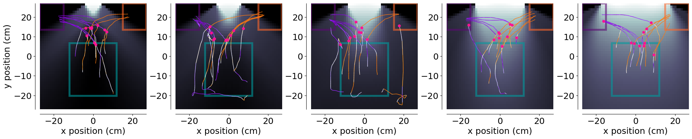
def get_info_at_position(info_matrix, position):
# Assuming info_matrix is a 2D numpy array and position is a tuple (x, y)
x, y = position
# Convert position to matrix indices
x_idx = int(x + 27)
y_idx = int(y + 27)
# but the matrix is 52x42 so the positions need to be scaled down
x_idx_norm = int(x_idx * (51 / 54))
y_idx_norm = int(y_idx * (41 / 54))
y_idx_norm = info_matrix.shape[0] - 1 - y_idx_norm
return info_matrix[y_idx_norm, x_idx_norm] # Note: y comes first in matrix indexing
# Compute information for each timepoint in interpolated_df
interpolated_df["info_gain"] = interpolated_df.apply(
lambda row: get_info_at_position(
info_map[aperture_to_occlusion[row.aperture]],
(row.x, row.y),
),
axis=1,
)
decision_points.dropna(subset=["x", "y"], inplace=True)
decision_points["info_gain"] = decision_points.apply(
lambda row: get_info_at_position(
info_map[aperture_to_occlusion[row.aperture]],
(row.x, row.y),
),
axis=1,
)
# Convert to sec
interpolated_df["time_in_sec"] = interpolated_df["trial_length"] * interpolated_df["trial_duration"]
durations = interpolated_df[["dataset", "trial", "trial_duration"]].drop_duplicates()
decision_points = decision_points.merge(durations, on=["dataset", "trial"], how="left")
decision_points["time_in_sec"] = decision_points["trial_length"] * decision_points["trial_duration"]
interpolated_df["distance_to_screen"] = np.abs(interpolated_df["y"] - 27)
interpolated_df["mouse_name"] = interpolated_df.dataset.str.split("_").str[0]
interpolated_df["heading_dir_flipped"] = interpolated_df.heading_dir * interpolated_df.flip_one_side
interpolated_df["head_angle_flipped"] = interpolated_df.head_angle * interpolated_df.flip_one_side
decision_points["distance_to_screen"] = np.abs(decision_points["y"].astype(float) - 27)
# Average velocity/info_gain around decision point
bin_size = 0.01
pre_window = 1
post_window = 0.02
dp_all = decision_points[["dataset", "aperture", "trial", "time_in_sec"]].rename(
columns={"time_in_sec": "decision_tl"}
)
df_all = interpolated_df.merge(
dp_all,
on=["dataset", "aperture", "trial"],
how="inner",
).copy()
df_all["t_rel"] = df_all["time_in_sec"] - df_all["decision_tl"]
df_all = df_all[(df_all.t_rel >= -pre_window) & (df_all.t_rel <= post_window)]
bins = np.arange(-pre_window, post_window + bin_size, bin_size)
df_all["t_bin"] = pd.cut(df_all.t_rel, bins=bins, labels=bins[:-1])
def _bin_mean_sem(frame, value_col):
binned = (
frame.groupby(["aperture", "t_bin"])[value_col]
.agg(["mean", "sem"])
.reset_index()
)
binned["t_bin"] = binned["t_bin"].astype(float)
return binned
metrics = [
{
"col": "velocity_y",
"ylabel": "Mean y-velocity",
"file": "figure4_velocity_around_decision.svg",
},
{
"col": "velocity_x_fliped",
"ylabel": "Mean x-velocity",
"file": "figure4_velocity_x_around_decision.svg",
},
{
"col": "info_gain",
"ylabel": "Mean info content",
"file": "figure4_info_gain_around_decision.svg",
},
]
binned_by_metric = {}
for metric in metrics:
value_col = metric["col"]
binned = _bin_mean_sem(df_all, value_col)
binned_by_metric[value_col] = binned
fig, axes = plt.subplots(1, 2, figsize=(12, 4), sharex=True)
# Overall
overall = (
df_all.groupby("t_bin")[value_col]
.agg(["mean", "sem"])
.reset_index()
)
overall["t_bin"] = overall["t_bin"].astype(float)
axes[0].plot(overall.t_bin, overall["mean"], color="black", linewidth=1.5)
axes[0].fill_between(
overall.t_bin,
overall["mean"] - overall["sem"],
overall["mean"] + overall["sem"],
color="black",
alpha=0.2,
linewidth=0,
)
axes[0].axvline(0, color="black", linestyle=":", linewidth=2)
axes[0].set_title("All apertures")
axes[0].set_ylabel(metric["ylabel"])
axes[0].set_xlabel("Time rel. to decision")
sns.despine(ax=axes[0])
# By aperture
for color, (idx, ap) in zip(plotting.colors_multi_aperture, enumerate(sorted(df_all.aperture.unique()))):
ap_df = binned[binned.aperture == ap]
axes[1].plot(ap_df.t_bin, ap_df["mean"], color=color, linewidth=1.5, label=f"Aperture {ap}")
axes[1].fill_between(
ap_df.t_bin,
ap_df["mean"] - ap_df["sem"],
ap_df["mean"] + ap_df["sem"],
color=color,
alpha=0.2,
linewidth=0,
)
axes[1].axvline(0, color="black", linestyle=":", linewidth=2)
axes[1].set_title("By aperture")
axes[1].set_xlabel("Time rel. to decision")
axes[1].set_ylabel(metric["ylabel"])
sns.despine(ax=axes[1])
plt.tight_layout()
sns.despine(offset=10)
plt.savefig(save_fig_path + metric["file"])
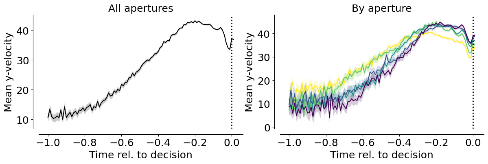
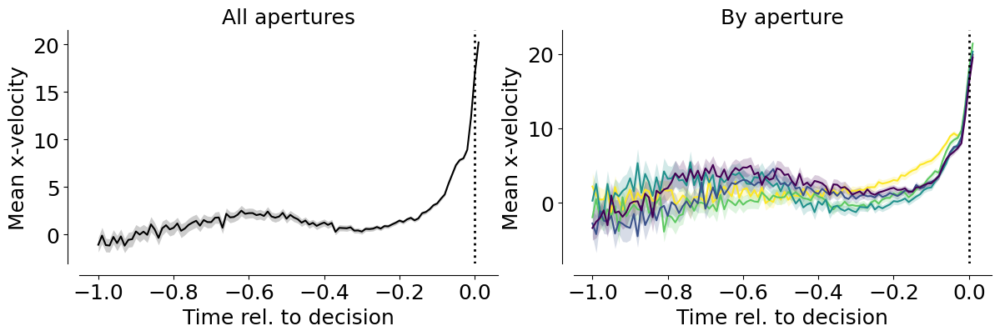
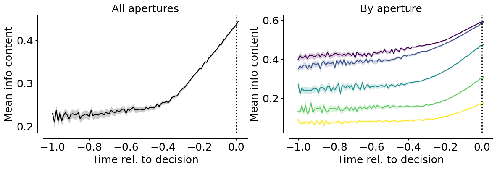
# Correlation between velocity and info gain (binned means)
vel_binned = binned_by_metric["velocity_y"]
info_binned = binned_by_metric["info_gain"]
corr_df = vel_binned.merge(
info_binned,
on=["aperture", "t_bin"],
suffixes=("_vel", "_info"),
)
# Define your correlation window here
corr_window = (-0.5, 0.0)
fig, ax = plt.subplots(1, 1, figsize=(6, 5))
divider = make_axes_locatable(ax)
apertures_sorted = sorted(corr_df.aperture.unique())
for color, (i, ap) in zip(plotting.colors_multi_aperture, enumerate(apertures_sorted)):
# Full data for the scatter plot
ap_df = corr_df[corr_df.aperture == ap].dropna(subset=["mean_info", "mean_vel"])
if ap_df.empty:
continue
# Find the row with the maximum velocity for this aperture
max_row = ap_df.loc[ap_df["mean_vel"].idxmax()]
max_x = max_row["mean_info"]
max_y = max_row["mean_vel"]
max_time = max_row["t_bin"]
ax.scatter(max_x, max_y, marker='x', s=70, color='black',
zorder=10)
ax.annotate(
f"{max_time:.2f}",
xy=(max_x, max_y),
xytext=(5, 5),
textcoords='offset points',
fontsize=10,
)
# Subset data for Pearson Correlation and Regression
mask = (ap_df.t_bin >= corr_window[0]) & (ap_df.t_bin <= corr_window[1])
stat_df = ap_df[mask]
if not stat_df.empty:
r_coeff, p_val = pearsonr(stat_df["mean_info"], stat_df["mean_vel"])
label_str = f"r={r_coeff:.2f}, p={p_val:.3f}"
# Plot regression line ONLY for the correlation window
slope, intercept = np.polyfit(stat_df["mean_info"], stat_df["mean_vel"], 1)
x_range = np.linspace(stat_df["mean_info"].min(), stat_df["mean_info"].max(), 10)
ax.plot(x_range, slope * x_range + intercept,
color=color, linewidth=2.5, zorder=5)
# Plot ALL scatter points
sc = ax.scatter(
ap_df["mean_info"],
ap_df["mean_vel"],
c=color,
s=35,
linewidths=0.6,
label=label_str,
edgecolor="white",
alpha=0.7
)
ax.set_xlabel("Information Content")
ax.set_ylabel("y-velocity")
leg = ax.legend(frameon=False)
for i, text in enumerate(leg.get_texts()):
ap_key = apertures_sorted[i]
text.set_color(plotting.colors_multi_aperture[i])
sns.despine(offset=10)
plt.tight_layout(pad=2.0)
plt.savefig(save_fig_path + "figure5_info_velocity_correlation_y.svg", transparent=True)
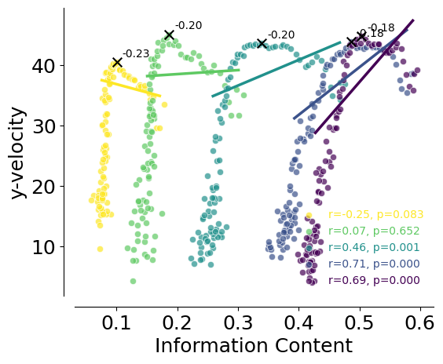